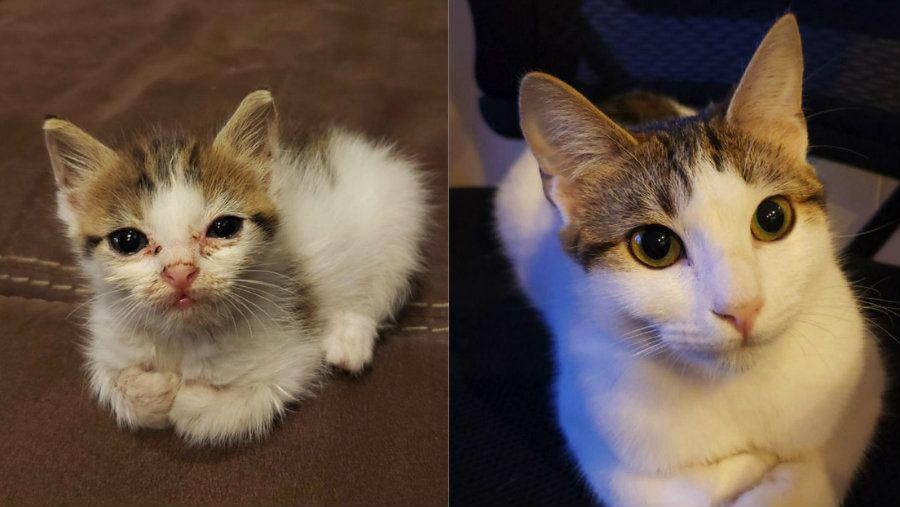
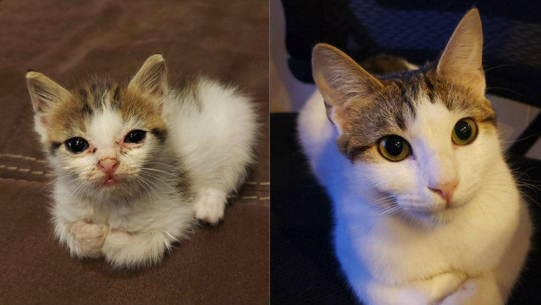
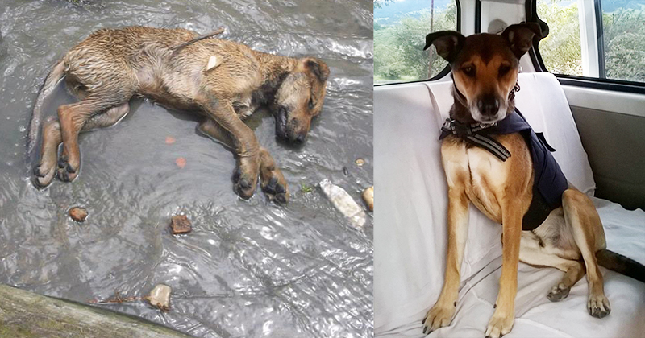

Luna
Luna fue rescatada de la calle después de haber estado abandonada durante días. Llegó con heridas graves y desnutrida, pero gracias a la ayuda de nuestros voluntarios, hoy está sana y feliz.
Luna fue rescatada de la calle después de haber estado abandonada durante días. Llegó con heridas graves y desnutrida, pero gracias a la ayuda de nuestros voluntarios, hoy está sana y feliz.
Max es un perrito valiente que fue encontrado en un estado crítico. Después de varias semanas de cuidados intensivos, hoy puede correr y jugar gracias a la ayuda de personas como tú.
